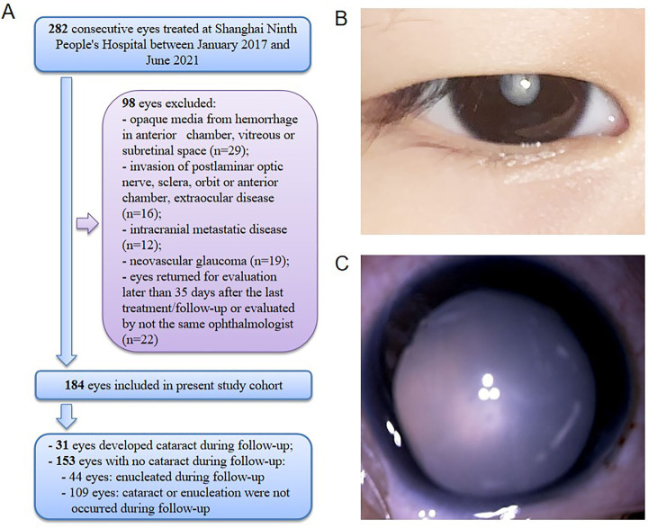
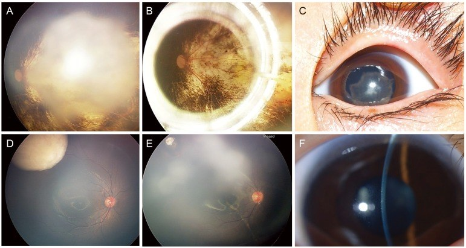
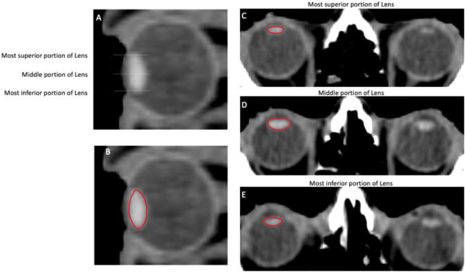
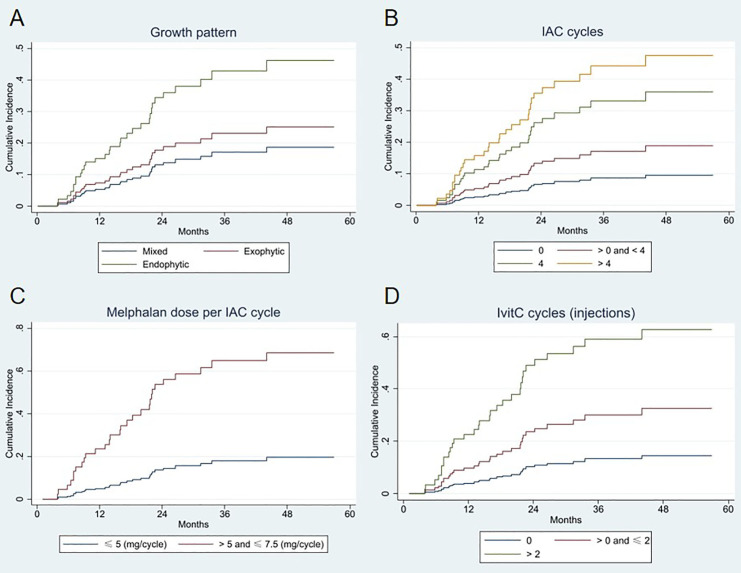

1459 — Đục thể thủy tinh do xạ ở trẻ sau retinoblastoma: khi nào mổ, chọn IOL và cái bẫy "đục che tái phát" / Radiation-induced cataract after retinoblastoma
Tags: pattern:duc-the-thuy-tinh pattern:duc-duoi-bao-sau vung:the-thuy-tinh vung:mat vung:tien-phong protocol:slit-lamp protocol:B-scan protocol:sinh-hieu-giac-mac score:LOCS-III score:PENTEC incidentaloma:khong
Mức chắc chắn (certainty): tổng hợp y văn (literature synthesis) — ghép đoàn hệ 184 mắt RB điều trị bảo tồn (Jia et al. 2024, PMC10958276, CC BY-NC), 2 loạt phẫu thuật đục TTT sau RB (Kim et al. 2017 PMC5327175, CC BY-NC 3.0; Bayraktar et al. 2018 PMC6032962, CC BY), loạt 28 mắt RB xạ ngoài 45 Gy (Yousef et al. 2020, PMC7852425, CC BY-NC-SA 4.0), tổng quan tạo đục TTT do xạ + hướng dẫn contour thể thủy tinh (Grosinger et al. 2026, PMC13315199, CC BY 4.0) và tổng quan độc tính mắt của xạ (Arturi et al. 2025, PMC12384690). Nhóm không có bệnh nhân của mình; các loạt phẫu thuật rất nhỏ (5–6 mắt) nên kết luận về an toàn ung thư phải thận trọng.
Câu chốt: thể thủy tinh là cấu trúc không mạch, không sửa chữa — tế bào biểu mô ở vùng sinh sản xích đạo bị xạ tổn thương DNA, di chuyển sai và biệt hóa lệch thành sợi trục bất thường, kết đạm và đục dưới bao sau (PSC). Ngưỡng 0,5 Gy (ICRP); PENTEC: 50% đục khi liều trung bình thể thủy tinh 9 Gy; tiềm tàng 2–5 năm ở liều cao, 5–10 năm ở liều thấp. Ở trẻ RB, đục TTT không chỉ do xạ: melphalan truyền động mạch (IAC) và tiêm nội nhãn cũng gây đục theo liều (16,8% trong 184 mắt). Cái bẫy chết người: đục dày che mất tái phát/u gieo — B-scan trước mọi ca mổ; và không mổ khi u còn hoạt động.
1. Tổng quan bệnh học – cơ chế hình ảnh (TẠI SAO)
1.1 Vì sao thể thủy tinh "nhớ" liều xạ suốt đời
- Thể thủy tinh: vỏ collagen, biểu mô dưới bao, sợi trục xếp lớp; không có mạch máu, không có thần kinh → không viêm, không tái sinh, không thải chất chết. Kích thước người lớn ~10 mm đường kính xích đạo × 4–5 mm trước–sau.
- Tế bào biểu mô ở vùng sinh sản (germinative zone) xích đạo phân chia suốt đời. Xạ gây đứt DNA ở nhóm này → rối loạn nguyên phân, di chuyển sai ra sau, biệt hóa thành sợi trục bất thường + kết đạm (protein aggregate) → tăng tán xạ ánh sáng → đục.
- Vì sao PSC là kiểu điển hình: tế bào biểu mô tổn thương trôi ra sau dọc vỏ bao và tích tụ ở cực sau — nơi có ít sợi trục lành che chắn — nên đục hạt/vacuole dưới bao sau xuất hiện trước, rồi lan ra vỏ và nhân. Không có mạch nên tổn thương tích lũy, không hồi phục và tiến triển dù đã ngừng xạ.
- Hệ quả hình ảnh: PSC chỉ thấy khi soi đèn khe / soi đáy mắt có giãn đồng tử; trên CT/MRI thể thủy tinh chỉ là cấu trúc tăng đậm/tăng tín hiệu, không phân biệt được đục — nên chẩn đoán là lâm sàng, hình ảnh chỉ để lập kế hoạch xạ và loại tái phát.
1.2 Ngưỡng định lượng (bắt buộc nhớ)
| Tham số | Con số | Nguồn |
|---|---|---|
| Ngưỡng đục thể thủy tinh | 0,5 Gy (ICRP) — có nghiên cứu cho ngưỡng thấp hơn | PMC13315199 |
| PENTEC — liều trung bình thể thủy tinh | 9 Gy → 50% đục (bác sĩ nhãn khoa chẩn đoán); tự khai 5% ở 12 Gy, 50% ở > 40 Gy | PMC12384690 |
| Trẻ sống sót u cơ vân đầu cổ | liều trung bình > 6 GyEQD2 → > 20% đục (mọi độ) | PMC13330630 |
| RB xạ ngoài 45 Gy | đục TTT 16/28 = 57%; biến chứng chung 68% | PMC7852425 |
| RB điều trị bảo tồn hiện đại (IAC/tiêm nội nhãn) | đục 31/184 = 16,8% (theo dõi trung bình 27,6 tháng) | PMC10958276 |
| Trẻ sống sót RB (xạ) — phân tích cũ | cataract extraction tăng 6 lần ở liều 5–22 Gy so với < 2,5 Gy | PMC13315199 (dẫn Chodick) |
| Đục thứ phát sau điều trị RB (loạt Hàn Quốc) | 17/208 = 8,2%; tuổi hình thành trung vị 97 tháng; RB → đục 79 tháng (29–140) | PMC5327175 |
| Thời gian tiềm tàng | liều cao 2–5 năm; liều thấp 5–10 năm hoặc hơn | PMC13315199 |
| Yếu tố làm nặng | tổng liều, phân liều, suất liều (≥ 0,09 Gy/phút nặng hơn < 0,048 Gy/phút), corticoid, đái tháo đường | PMC13315199 |
- Điểm cần nhớ cho trẻ RB: trong kỷ nguyên IAC, nguyên nhân đục TTT hàng đầu đã dịch từ xạ sang melphalan; phân tích đa biến của 184 mắt cho thấy IOP cao, liều melphalan mỗi chu kỳ cao và số chu kỳ tiêm nội nhãn nhiều là yếu tố độc lập. Vì vậy hỏi đúng phác đồ (số chu kỳ, mg/kg) quan trọng như hỏi liều Gy.

Bé gái 36 tháng, RB mắt phải nhóm E (IOP 30 mmHg), 5 chu kỳ IAC, 9 tháng sau xuất hiện đục TTT. (A) sơ đồ chọn mẫu 282 → 184 mắt. Ảnh nguyên bản: Jia et al. 2024 (PMC10958276), CC BY-NC.1.3 Vì sao trẻ khác người lớn
- Thời gian phơi nhiễm dài: thể thủy tinh trẻ lớn dần và liên tục sinh sợi → tổn thương biểu mô tích lũy nhiều thập kỷ, nên đục có thể xuất hiện muộn sau tuổi trưởng thành (sống sót ung thư nhi).
- Nhãn cầu nhỏ, khoảng cách ngắn: liều vào thể thủy tinh cao hơn với cùng liều u; xạ áp (plaque) và xạ toàn nhãn dễ cho liều thể thủy tinh lớn.
- Hệ quả chức năng nặng hơn: đục + nhược thị + tổn thương hoàng điểm do u = mất thị giác hai bậc, nên thời điểm mổ là quyết định chức năng, không chỉ giải phẫu.
2. Mẫu hình + chẩn đoán phân biệt theo vị trí (Gamut)
Mẫu hình khởi điểm: trẻ đã điều trị RB, sau 6 tháng–5 năm xuất hiện đồng tử trắng/xám, chói, kém theo dõi, lác mới, đồng tử còn phản xạ đỏ yếu; không đau, không đỏ.
Chia gamut theo vị trí "ánh trắng" nằm ở đâu:
| Vị trí | Thực thể | Điểm phân biệt cốt lõi |
|---|---|---|
| Trong thể thủy tinh | Đục do xạ · đục do melphalan IAC/tiêm nội nhãn · đục do corticoid · đục chấn thương | Soi đèn khe: PSC hạt/vacuole; không có khối, không có mạch máu, không canxi; đục đứng yên khi đổi tư thế |
| Ngay sau thể thủy tinh | Tái phát RB (khối sau thể thủy tinh) · u gieo dịch kính (seeds) · bong võng mạc tiết dịch | B-scan: khối đặc/canxi hóa, seeds lơ lửng, bong dạng vòm; soi không thấy đáy mắt → bắt buộc siêu âm |
| Toàn nhãn cầu | Glôcôm tân mạch · teo nhãn (phthisis) · bệnh võng mạc do xạ nặng | IOP cao + tân mạch mống mắt; nhãn cầu teo nhỏ; đục là hệ quả, không phải bệnh chính |
| Ngoài nhãn cầu | U hốc mắt tái phát xâm lấn | Lồi mắt, hạn chế vận nhãn, khối trên MRI — không giải thích bằng đục TTT |
- Mnemonic LENS cho "ánh trắng sau điều trị RB": Lens (đục do xạ/thuốc/corticoid) – Effusion (bong tiết dịch) – Neoplasm (tái phát/seeds) – Scar/sequelae (bệnh võng mạc do xạ, glôcôm, teo nhãn).
3. Bảng so sánh phân biệt (ma trận đối chiếu)
| Thực thể | Hình ảnh điển hình | Chốt vào (rule-in) | Chốt loại (rule-out) | Gợi ý xác nhận |
|---|---|---|---|---|
| Đục thể thủy tinh do xạ | PSC hạt + vacuole ở cực sau, sau đó vỏ/nhân; không khối; một bên nếu xạ một bên | Tiền sử xạ vào thể thủy tinh (liều trung bình > 6–9 Gy) + PSC + tiềm tàng 1–5 năm; đục nằm trong vùng chiếu | Đục không tương xứng vùng chiếu, có khối sau thể thủy tinh, hoặc khởi phát trong vài tuần → nghĩ nguyên nhân khác | Soi đèn khe có giãn đồng tử; đối chiếu bản đồ liều; LOCS III |
| Đục do melphalan (IAC/tiêm nội nhãn) | Đục vỏ sau/PSC, thường hai bên nếu tiêm hai mắt; kèm độc tính hắc–võng mạc | Nhiều chu kỳ IAC + liều melphalan cao + nhiều mũi tiêm nội nhãn; đục xuất hiện vài tháng sau chu kỳ | Chỉ 1 chu kỳ, liều thấp, không có thay đổi hắc–võng mạc → ít nghĩ melphalan | Đếm số chu kỳ + mg/kg; B-scan; OCT khi còn thấy đáy mắt |
| Đục do corticoid | PSC (giống hệt đục do xạ) | Dùng corticoid toàn thân/tiêm dưới Tenon kéo dài ≥ vài tháng, hai bên | Ngừng corticoid mà vẫn tiến triển + có tiền sử xạ → nghiêng do xạ | Rà mọi đường corticoid; thử giảm liều |
| Tái phát RB sau thể thủy tinh | Khối đặc trước võng mạc/dịch kính, canxi hóa, seeds; B-scan có echo dày | Khối mới/lớn lên trên B-scan + canxi + tăng tưới máu, đục không giải thích được | Đục đồng nhất, không khối, B-scan sạch → không phải tái phát | B-scan bắt buộc; MRI/CT hốc mắt; so ảnh đáy mắt cũ |
| Bong võng mạc tiết dịch (exudative) | B-scan bong dạng vòm, dịch di chuyển, không canxi; đáy mắt mờ | Bong + dịch dưới võng mạc + u/điều trị gần đây | B-scan không bong, không dịch → loại | B-scan động; OCT/FA nếu thấy đáy mắt |
| Xuất huyết dịch kính tổ chức hóa | Không phản xạ đỏ, B-scan echo mịn lơ lửng, không khối | Khởi phát sau chấn thương/phẫu thuật, tiêu dần theo tuần | Echo dày + canxi + lớn dần → nghi u, không phải máu | B-scan lặp 2–4 tuần |
- Dấu hiệu soi đèn khe đáng tin nhất: PSC hạt mịn, óng ánh, kèm vacuole, bờ không đều, không có mạch máu — khác màng xơ sau thể thủy tinh (màng có bờ rõ, thường sau mổ/viêm).

Cùng một mắt RB sau điều trị: (C) đục toàn bộ trước mổ — không thấy đáy mắt; (F) mắt khác có đục dưới bao sau dạng phiến với chùm sáng đèn khe. Ảnh nguyên bản: Kim et al. 2017 (PMC5327175), CC BY-NC 3.0.4. Protocol chụp/khám + hệ phân độ + thời điểm mổ
4.1 Khám — không có hình ảnh nào thay được đèn khe
- Soi đèn khe có giãn đồng tử (trẻ nhỏ: khám dưới mê – EUA), phân độ LOCS III (NO/NC/C/P), đo IOP, soi góc khi nghi glôcôm, siêu âm B khi không thấy đáy mắt.
- B-scan 10 MHz — bắt buộc trước mổ: kích thước khối/canxi hóa, seeds dịch kính, bong võng mạc, độ dày hắc mạc; A-scan đo trục nhãn cầu để tính công suất IOL.
- MRI/CT hốc mắt chỉ khi nghi tái phát/xâm lấn; CT nhạy với canxi hóa (RB), MRI đánh giá xâm lấn dây thị/hốc mắt và không dùng iod ở trẻ khi không cần.
- Xạ trị — contour thể thủy tinh như OAR riêng: CT lập kế hoạch lát 2 mm (thể thủy tinh hiện trên 3–6 lát), vẽ toàn bộ thể thủy tinh (xích đạo → cực trước/sau), cân nhắc PRV +2 mm vì thể thủy tinh di động tới 2 mm khi mắt nhìn thẳng; báo cáo Dmax và Dmean của thể thủy tinh.

Thể thủy tinh tăng đậm hơn dịch kính trên CT, đường viền đỏ = contour; thể thủy tinh chỉ hiện trên 3–6 lát tùy độ dày lát, nên lát 2 mm giúp vẽ đủ cực trên–dưới. Ảnh nguyên bản: Grosinger et al. 2026 (PMC13315199), CC BY 4.0.4.2 Ngưỡng liều & thời điểm mổ
- Mục tiêu lập kế hoạch: **Dmean thể thủy tinh < 6 GyEQD2** (dưới ngưỡng > 20% ở trẻ u cơ vân) và càng xa 9 Gy càng tốt; khi khối sát nhãn cầu → proton, che chì, hoặc góc chùm để né.
- Chỉ mổ khi: (1) u đã thoái triển/ổn định, không seeds hoạt động; (2) B-scan sạch; (3) đục đủ nặng để giải thích mất thị lực; (4) còn tiềm năng thị giác (hoàng điểm chưa bị u xâm lấn). Trong các loạt đã công bố, mổ được thực hiện 67,2 tháng sau lần điều trị cuối (Bayraktar) và 79 tháng sau chẩn đoán (Kim) — tức rất thận trọng, không mổ sớm.
- Kỹ thuật: phaco/nhũ hóa hút qua đường giác mạc trong suốt (trẻ nhỏ: mở bao trước thủ công), đặt IOL acrylic gập trong bao, giữ nguyên bao sau; cân nhắc cắt dịch kính trước nếu có dính; nhắm khúc xạ đích theo tuổi (để lại viễn thị nhẹ — không có con số chuẩn từ y văn RB).
- Sau mổ: PCO gần như 100% (trung bình 10,8 tháng) → Nd:YAG khi cần (4/6 mắt, trung bình 70,7 tháng); theo dõi viêm màng bồ đào trước phòng (2/6 mắt), IOP, bong võng mạc, và bệnh võng mạc do xạ (phát hiện sau khi hết đục); nhược thị cần tập/che mắt.
flowchart TD
A[Trẻ RB sau xạ/IAC: đồng tử trắng hoặc giảm thị lực] --> B[EUA: soi đèn khe giãn đồng tử, IOP, soi góc]
B --> C{Thấy đáy mắt?}
C -->|Không| D[B-scan + A-scan: khối, canxi, seeds, bong võng mạc]
C -->|Có| E[Soi đáy mắt + chụp ảnh, so ảnh cũ]
D --> F{Có khối/canxi/seeds/bong?}
F -->|Có| G[Nghi tái phát/biến chứng: MRI, hội chẩn ung thư nhãn — KHÔNG mổ đục]
F -->|Không| H{U ổn định + đục đủ nặng + còn tiềm năng thị giác?}
H -->|Không| I[Theo dõi 3-6 tháng, khúc xạ, nhược thị]
H -->|Có| J[Phaco + IOL trong bao, giữ bao sau]
J --> K[Theo dõi PCO, IOP, bong võng mạc, bệnh võng mạc do xạ, nhược thị]
4.3 Kết quả phẫu thuật — trung thực với cỡ mẫu nhỏ
- Bayraktar 2018: 6 mắt / 6 trẻ, phaco + IOL; không biến chứng trong mổ; viêm màng bồ đào 2/6; PCO 100%; YAG 4/6; không tăng IOP, không bong võng mạc, không tái phát trong 105,8 tháng theo dõi; thị lực tăng ở mọi mắt nhưng bị giới hạn vì 5/6 mắt có u hoàng điểm.
- Kim 2017: 5 mắt / 5 trẻ; không biến chứng; thị lực tăng ở cả 5 mắt; không tái phát/di căn trong 36 tháng.
- Cộng lại chỉ 11 mắt → không thể kết luận "mổ đục TTT sau RB an toàn tuyệt đối"; điều có thể nói: ở u đã thoái triển, không thấy tái phát trong các loạt nhỏ này, và lợi ích thị lực phụ thuộc hoàng điểm.
5. Biến thể bình thường và cạm bẫy
- PSC không đặc hiệu: corticoid, đái tháo đường, viêm màng bồ đào, chấn thương đều gây PSC — không được quy cho xạ chỉ vì có PSC; phải có tiền sử liều + vị trí tương ứng.
- Đục "che" tái phát: đồng tử trắng ở trẻ RB luôn phải loại khối sau thể thủy tinh bằng B-scan trước khi hẹn mổ — bỏ qua = mổ vào mắt còn u hoạt động.
- Đục nhẹ + thị lực kém không tương xứng: tìm bệnh võng mạc do xạ, phù hoàng điểm, teo thị do xạ (bài 1458), glôcôm — mổ đục sẽ không cải thiện.
- "Đục tái phát" sau mổ: thực chất là PCO (màng sau IOL) hoặc xơ co bao trước, không phải đục thể thủy tinh mới — YAG chứ không mổ lại.
- Bẫy ở trẻ nhỏ: IOL tính theo trục nhãn cầu đang lớn → chọn công suất khác người lớn; nhược thị sau mổ là yếu tố quyết định thị lực cuối, không phải độ trong của trục quang.
- Bẫy thời gian: "đục xuất hiện 9 tháng sau 5 chu kỳ IAC" (ca trong ảnh) không phải đục do xạ — đừng gán xạ khi phác đồ chính là melphalan; hỏi số chu kỳ và mg/kg.
- Bẫy hình ảnh: CT/MRI không chẩn đoán được đục thể thủy tinh; đừng báo "thể thủy tinh bình thường" trên MRI để loại đục — phải soi đèn khe.
6. Tự lượng giá — Blind Quiz
Ca 1 — Bé gái 3 tuổi, RB nhóm E mắt phải, IOP 30 mmHg, 5 chu kỳ IAC. 9 tháng sau: đồng tử trắng, không đau.
- Câu hỏi: Chẩn đoán? Nguyên nhân do xạ hay do thuốc? Việc bắt buộc phải làm trước khi mổ?
Bấm để hiện đáp án (findings + chẩn đoán)
- Dấu hiệu: đục toàn bộ thể thủy tinh (không thấy đáy mắt), nhãn cầu không viêm, IOP 30 mmHg lúc chẩn đoán.
- Chẩn đoán: đục thể thủy tinh sau điều trị RB — ở ca này do melphalan IAC (5 chu kỳ, xuất hiện 9 tháng sau), không phải đục do xạ.
- Bắt buộc trước mổ: B-scan loại khối/canxi/seeds/bong võng mạc; đo IOP/soi góc (IOP 30 mmHg → loại glôcôm); A-scan để tính IOL.
- Nguồn ảnh: Jia et al. 2024 (PMC10958276), CC BY-NC.
Ca 2 — Bé trai 9 tuổi, RB đã xạ 45 Gy 6 năm trước, nay mờ dần mắt trái. Đèn khe: phiến đục dưới bao sau.
- Câu hỏi: Vì sao đục dưới bao sau lại là kiểu của xạ? Nêu 3 nguyên nhân khác gây PSC. Khi nào mổ?
Bấm để hiện đáp án (findings + chẩn đoán)
- Cơ chế: tế bào biểu mô vùng sinh sản bị xạ di chuyển ra sau và tạo sợi trục bất thường + kết đạm ở cực sau → PSC; thể thủy tinh không mạch nên không sửa chữa.
- 3 nguyên nhân khác: corticoid, đái tháo đường, viêm màng bồ đào (thêm: chấn thương, tia hồng ngoại).
- Khi mổ: u ổn định, B-scan sạch, đục đủ nặng, còn tiềm năng thị giác; trong các loạt, mổ 67–96 tháng sau điều trị/chẩn đoán.
- Nguồn ảnh: Kim et al. 2017 (PMC5327175), CC BY-NC 3.0.
Ca 3 — Hội chẩn: "Bé RB sẽ xạ, làm sao để không bị đục?"

- Câu hỏi: Đường cong nào dốc nhất? Với xạ, ngưỡng liều thể thủy tinh cần nhớ là bao nhiêu? Trả lời gia đình thế nào?
Bấm để hiện đáp án (findings + chẩn đoán)
- Đọc hình: nguy cơ tích lũy tăng rõ theo số chu kỳ IAC (> 4) và liều melphalan mỗi chu kỳ (> 5–7,5 mg/kg), và theo số mũi tiêm nội nhãn (> 2) — thuốc quan trọng ngang xạ trong kỷ nguyên bảo tồn.
- Ngưỡng xạ: 0,5 Gy là ngưỡng phát hiện đục (ICRP); 9 Gy trung bình → 50% (PENTEC); trẻ u cơ vân > 6 GyEQD2 → > 20%.
- Trả lời: giữ Dmean thể thủy tinh < 6 GyEQD2, ưu tiên proton/che chì; hẹn khám đèn khe mỗi 6–12 tháng; nếu đục xuất hiện, đa số mổ được và thị lực tăng, nhưng giới hạn bởi tổn thương hoàng điểm — cần nói rõ kỳ vọng.
- Nguồn ảnh: Jia et al. 2024 (PMC10958276), CC BY-NC.
Bài liên quan chéo
- 400 – Tổng quan Mắt & thị giác
- 1458 – Bệnh thần kinh thị do xạ ở trẻ (RION)
- 1450 – Glôcôm sau xạ trị ở trẻ
- 1419 – Bệnh võng mạc do xạ ở trẻ sau xạ trị u não/retinoblastoma
- 412 – U trong nhãn cầu (RB — tái phát sau thể thủy tinh)
- 1935 – Đục thể thủy tinh sau MIGS (PSC thật vs không bào — cùng nguyên tắc đọc đèn khe)
Ảnh
images/1459_duc-thuy-tinh_Slitlamp_PMC10958276-Fig1.jpg— ảnh đoạn trước + sơ đồ chọn mẫu, CC BY-NC, nguyên bản (không crop/ghép).images/1459_duc-thuy-tinh_Chart_PMC10958276-Fig2.jpg— nguy cơ tích lũy (competing risk), CC BY-NC, nguyên bản.images/1459_hau-phau_AnteriorSegment_PMC5327175-Fig2.jpg— đáy mắt + đoạn trước trước/sau mổ, CC BY-NC 3.0, nguyên bản.images/1459_lens-CT_PMC13315199-Fig5.jpg— contour thể thủy tinh trên CT, CC BY 4.0, nguyên bản.- Chi tiết nguồn + giấy phép:
images/CREDITS.md; link bài gốc:sources.md.
Không dùng để chẩn đoán độc lập khi chưa có người hướng dẫn.